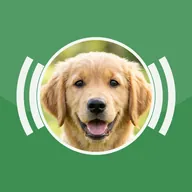
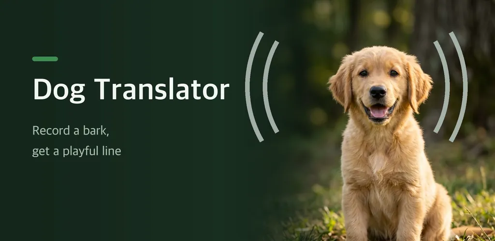
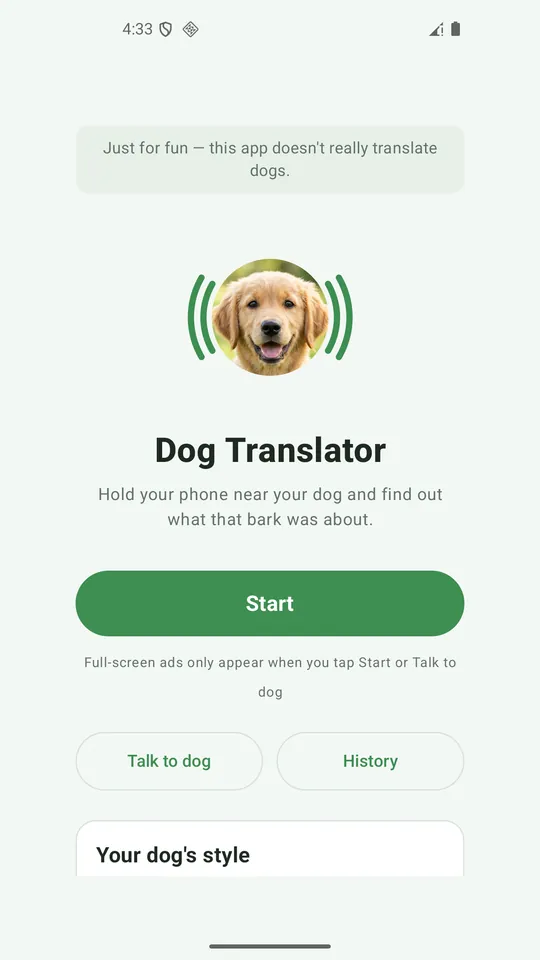
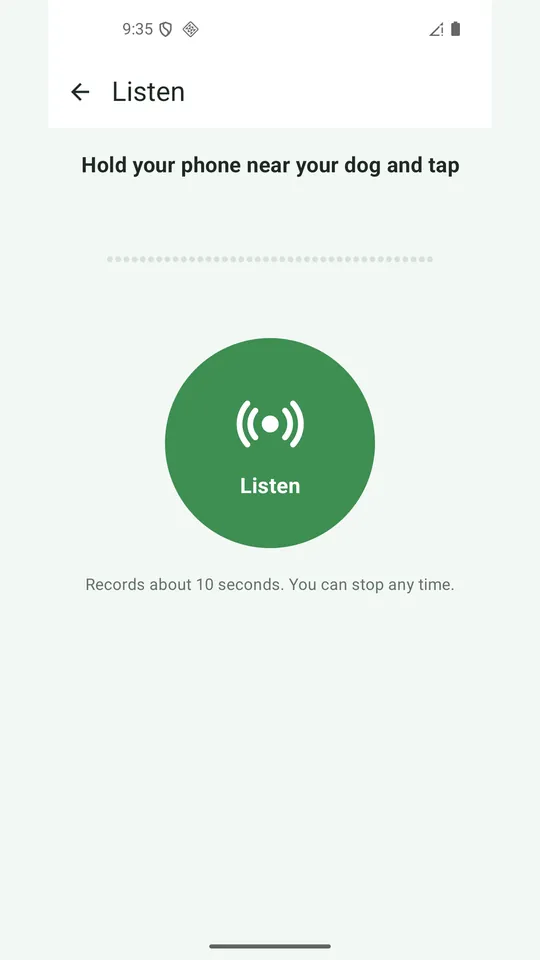
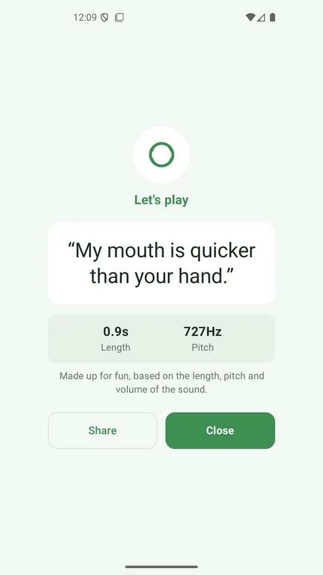
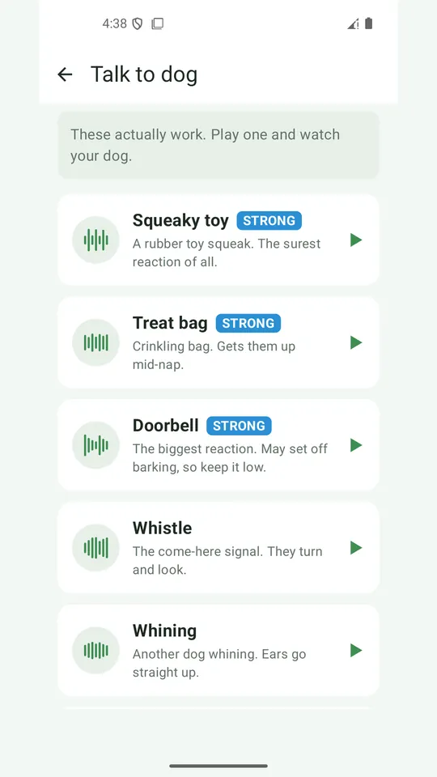
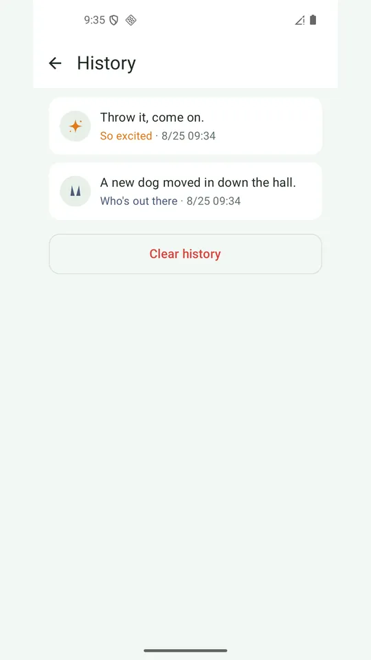

Dog Translator - Bark Sounds
Dog translator for fun. Record a bark for a playful line, plus dog sounds.






About this app
This is a dog translator made for fun. It does not really translate dogs.
When your dog barks, hold your phone close and tap Start. A moment later a line pops up that fits the sound. Maybe it is a hungry complaint, maybe a demand to play, maybe just hello. This app was not built to be right. It was built so you and your dog can be silly together.
- *The result comes from the sound, not from a dice roll**
The app measures how long the bark was, how high it was and how loud it was, picks one of eight moods, and matches a line to it. Play the same sound again and you get the same line. Nothing is less fun than an app that says something different every single time. There are 1,024 lines in here. If nothing comes through the microphone, the app says so instead of making something up.
- *Talk to dog actually works**
Six sounds dogs really respond to are built in, all made from scratch: a squeaky toy, a crinkling treat bag, a doorbell and more. Play one and watch those ears go up. The strongest ones are marked. Keep the doorbell quiet, though, since it can set off barking.
- *Your dog's style**
As your recordings pile up, a profile card grows and shows which mood your dog uses most.
- *Share the funny ones**
Every result card can be saved and shared as an image.
- *Our promises**
- No subscription, no purchases. Everything is free.
- Sound is measured on the spot and dropped. Nothing is saved to a file and nothing leaves your phone.
- The app never says anything about health or illness. That is your vet's job.
This app is for entertainment. Please take every result as a joke.
Ads keep it free. There is a banner at the bottom, and full-screen ads only appear when you enter from Start or Talk to dog on the home screen.
Android · free with ads · Developer: RealTunaLove · Store listing in 17 languages
Background story: why I built it